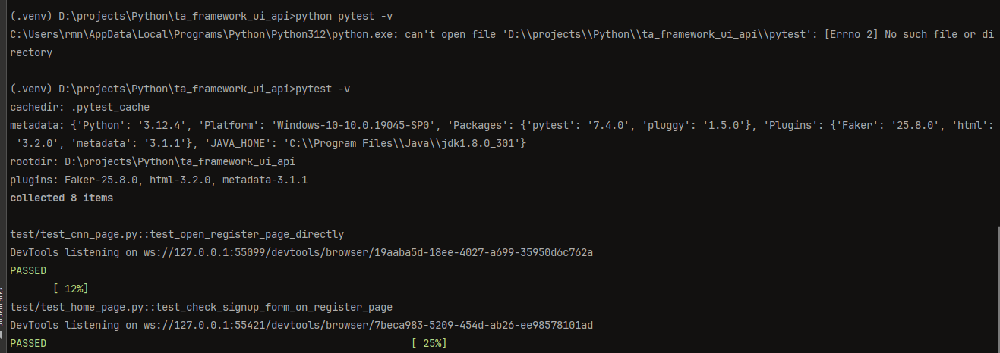

Test automation framework for testing UI, front-end and back-end API of restful-booker web-site - https://automationintesting.online.
2.1. Table of contents
2.2. Resources of web app
2.2.1. Restful-booker app resources
2.2.1.1. Restful-booker web-site URL
https://automationintesting.online/
2.2.1.1.1. Restful-booker API
2.2.2. Booking side
2.2.2.1. Home web page
Home web page: https://automationintesting.online

2.2.2.1.1. Basic structure of home web page
```
logo(picture)
welcome_text
rooms_section
room_section
hotel_picture
hotel_room_description
hotel_room_description_header
hotel_room_type
hotel_room_wheelchair_option
hotel_room_description_title
hotel_room_options
hotel_room_option_wifi
hotel_room_option_refreshments
hotel_room_option_tv
hotel_room_option_safe
hotel_room_option_radio
hotel_room_option_views
hotel_room_booking_button
booker_contact_form
name_input_form
email_input_form
phone_input_form
subject_input_form
message_input_form
submit_button_on_contact_form
alert_booker_form
hotel_contact_details_field
map_picture
footer_panel
site_owner_info
cookie_policy_link
privacy_policy_link
admin_panel_link
```
2.2.3. Booking web page
Booking web page: https://automationintesting.online
Same URL as for Home page but with additional components on the page

2.2.4. Admin side
2.2.4.1. Admin (Rooms) web page
Home web page: https://automationintesting.online/#/admin/

2.2.4.2. Report web page
Report web page: https://automationintesting.online/#/admin/report

2.2.4.3. Branding web page
Branding web page: https://automationintesting.online/#/admin/branding

2.2.4.4. Messages web page
Messages web page: https://automationintesting.online/#/admin/messages

2.3. Test framework configuration and setup
2.3.1. Required python packages
In this project used ‘pip-tools’ and approach to use high-level dependency tree. Main required packages presented in requirements.in. All used Python packages for the current project are generates in requirements.txt
Below is the list of main packages with references
2.3.1.1. For tests itself
pytest
pypi.org docs: https://pypi.org/project/pytest/
related info: https://docs.pytest.org/en/latest/
pip install pytest
hypothesis
pypi.org docs: https://pypi.org/project/hypothesis/
related info: https://hypothesis.works/
pip install hypothesis
2.3.1.2. For ui/web testing
selenium
pypi.org docs: https://pypi.org/project/selenium/
related info: https://selenium-python.readthedocs.io/
pip install selenium
webdriver-manager
pypi.org docs: https://pypi.org/project/webdriver-manager/
related info: https://github.com/bonigarcia/webdrivermanager
pip install webdriver-manager
2.3.1.3. Utils/configs
mypy
pypi.org docs: https://pypi.org/project/mypy/
related info: https://mypy-lang.org/
pip install mypy
python-dotenv
pypi.org docs: https://pypi.org/project/dotenv/
related info: https://www.dotenv.org/docs/languages/python
pip install python-dotenv
pyyaml
pypi.org docs: https://pypi.org/project/PyYAML/
related info: https://pyyaml.org/
pip install pyyaml
configParser
pypi.org docs: https://pypi.org/project/configparser/
related info: https://docs.python.org/3/library/configparser.html
pip install configparser
openpyxl
pypi.org docs: https://pypi.org/project/openpyxl/
related info: https://openpyxl.readthedocs.io/en/stable/
pip install openpyxl
pyreverse
pypi.org docs: https://pypi.org/project/pyreverse/
related info: https://pylint.readthedocs.io/en/latest/pyreverse.html
Pyreverse has now been integrated to pylint : http://pypi.python.org/pypi/pylint/
pipdeptree
pypi.org docs: https://pypi.org/project/pipdeptree/
related info: https://github.com/tox-dev/pipdeptree
pip install pipdeptree
invoke
Invoke is a Python (2.7 and 3.4+) library for managing shell-oriented subprocesses and organizing executable Python code into CLI-invokable tasks. It draws inspiration from various sources (make/rake, Fabric 1.x, etc) to arrive at a powerful & clean feature set.
pypi.org docs: https://pypi.org/project/invoke/
related info: https://www.pyinvoke.org/
pip install invoke
tox
tox aims to automate and standardize testing in Python. It is part of a larger vision of easing the packaging, testing and release process of Python software (alongside pytest and devpi).
pypi.org docs: https://pypi.org/project/tox/
related info: https://tox.wiki/en/latest/?badge=latest
pip install tox
2.3.1.4. Logging/reporting
allure
pypi.org docs: https://pypi.org/project/allure-pytest/
related info: https://allurereport.org/docs/pytest/
pip install allure-pytest
pytest-html
pypi.org docs: https://pypi.org/project/pytest-html/
related info: https://pytest-html.readthedocs.io/en/latest/
pip install pytest-html
loguru
pypi.org docs: https://pypi.org/project/loguru/
related info: https://loguru.readthedocs.io/
pip install loguru
2.3.1.5. Data generators
wonderwords
pypi.org docs: https://pypi.org/project/wonderwords/
related info: https://loguru.readthedocs.io/
pip install wonderwords
Faker
pypi.org docs: https://pypi.org/project/Faker/
related info: http://faker.rtfd.org/
pip install Faker
2.3.1.6. DB
mysql-connector-python
pypi.org docs: https://pypi.org/project/mysql-connector-python/
related info: https://dev.mysql.com/doc/connector-python/en/
pip install mysql-connector-python
2.3.1.7. Assertions
PyHamcrest
pypi.org docs: https://pypi.org/project/PyHamcrest/
related info: https://pyhamcrest.readthedocs.io/
pip install PyHamcrest
regex
pypi.org docs: https://pypi.org/project/regex/
related info: https://github.com/mrabarnett/mrab-regex
pip install regex
2.3.1.8. Code analysing
pylint
pypi.org docs: https://pypi.org/project/pylint/
related info: https://github.com/pylint-dev/pylint
pip install pylint
Generate a default configuration file for the Pylint code analyzer by
pylint --generate-rcfile > pylint.rc
2.4. Project docs
This project contains generated documentation by Sphinx All documentation you can find by opening index.html in the browser or check ta_framework_ui_api.pdf Sphinx setup and generating process described here
2.5. Project setup process
2.5.1. 1. Setup by scripts
By default, you can use file:
setup_env.batfor Windows-based machine orsetup_env.shUNIX-based for validating python version, installing all packages required for running current project. Otherwise, you can manually install everything using described steps below or fix some issues that appears while project was configured via scripted file.
2.5.2. 2. Create and activate a new virtual environment:
Create virtual environment.
Script below is creating environment with name ‘env’.
If you want to create environment with unique name, please replace the env name using your env name in script
python -m {here_is_your_venv_name} ../envWorking script for creating venv with name ‘venv’ is below:
python -m venv ../env
then activate it
for unix-based
source ../venv/bin/activate
for windows
.\.venv\Scripts\Activate
If you like to have different name for the environment
python -m venv {venv_for_project}
and then
source {venv_for_project}/Scripts/activate
For deactivating created env use command
*
shell deactivate
2.5.3. 3. Install required packages from requirements.txt
pip install -r requirements.txt
If requirements.txt file is missing request, or you have different configuration of the project after installation, please check generate new requirements.txt file using command
pip-compile requirements.in
Created requirements.txt file will have all dependency for the project.
In case if you are using ‘pip-tools’ do next steps,
check
requirements.incontent for preventing conflicts with existing(venv/global) configurations.compile requirements.txt by
pip-compile requirements.in
install dependencies by
pip install -r requirements.txt
2.5.4. 4. Check prerequisites for Allure test report generation
Check your system on installed and available :
JAVA
java -versionNode.js
node -vIf programs are missing install them using info below
Install Java 3
Download Java 3 HERE
Install Node.js
Download Node.js HERE
In command prompt, run the below command
npm install -g allure-commandline
Add npm and allure-commandline to system path
%AppData\Roaming\npm
Check that system can have access to allure by
allure --versionInstall allure-pytest
pip install allure-pytest
or from your IDE
2.5.5. 5. Usage DB as source of test data
In case if your test data is stored in DB or external files, check the project configuration and adjust test data manually.
2.5.5.1. 1. Update DB content
If you are using data from DB generate data based on your testing model or paste it manually preferable to use pip install mysql-connector-python
2.5.6. 6. Checking project dependency tree
2.5.6.1. pipdeptree
Basic Dependency Tree
pipdeptree
Dependency Tree in JSON Format
pipdeptree --json
Dependency Tree with Outdated Packages
pipdeptree --outdated
Dependency Tree for a Specific Package
pipdeptree -p <package_name>
Generate a Text Report and Save to File
pipdeptree > resources/project_dependencies.txt
Visualize Dependency Tree with Graphviz first install graphviz:
pip install graphviz
then generate a graphical representation:
pipdeptree --graph-output png > resources/project_dependencies.png
2.5.7. Documentation
2.5.8. Pydocstyle
To check your code for missing docstrings for current project selected pydocstyle.
pydocstyle core
2.5.8.1. 3. Check an Entire Directory
To check all Python files in a specific directory, you can run:
bash
pydocstyle path/to/your_directory/
2.5.8.2. 4. Check with Specific Conventions
You can specify the docstring conventions you want to enforce using the --convention flag. The available conventions are:
googlenumpypep257
For example, to check using the Google style:
bash
pydocstyle --convention=google path/to/your_directory/
2.5.8.3. 5. Ignore Specific Errors
If you want to ignore certain error codes, you can use the --ignore option followed by the error codes (comma-separated). For example, to ignore error code D103 (missing docstring in public function):
bash
pydocstyle --ignore=D103 path/to/your_directory/
2.5.8.4. 6. Output Format
You can change the output format using the --format option. The default format is a simple text output, but you can change it to json for easier parsing:
bash
pydocstyle --format=json path/to/your_directory/
2.5.8.5. 7. Verbose Mode
To see more detailed output, you can run pydocstyle in verbose mode:
bash
pydocstyle --verbose path/to/your_directory/
2.5.8.6. 8. Checking a Specific File or Line
You can check a specific line in a file by appending the line number to the file path. For example, to check line 42 of your_file.py:
bash
pydocstyle path/to/your_file.py:42
2.5.8.7. 9. Show Available Error Codes
To see a list of all available error codes and their meanings, use the --help option:
bash
pydocstyle --help
2.5.8.8. Summary of Commands
Check a specific file:
pydocstyle path/to/your_file.pyCheck an entire directory:
pydocstyle path/to/your_directory/Specify conventions:
pydocstyle --convention=google path/to/your_directory/
Ignore specific errors:
pydocstyle --ignore=D103 path/to/your_directory/
Output in JSON format:
pydocstyle --format=json path/to/your_directory/
2.5.8.9. Generating documentation by Sphinx
Install Sphinx in your project environment:
pip install sphinx
Set Up Sphinx in Your Project !!! IMPORTANT For more convenient usage of project structure to better create separate folder where will be stored all documentation and related Sphinx config files and folder.
For this project was created new folderdocsand from that place all Sphinx related command should be executed. After navigation to thedocsdirectory, run:sphinx-quickstart
This command will guide you through setting up Sphinx by asking several configuration questions.
Typical responses:
Separate source and build directories: Yes
Project name: [Your project name]
Author name: [Your name]
Project version: [Your project version]
Project language: [en]
This will generate
1.source/directory with a defaultconf.pyfile for configuration and some starter.rst(reStructuredText) files.
2.build/directory (will be empty). It’s default directory that will have all project related data if you will not use any different name for collecting generated Sphinx docs (pdf, html… etc).
It can be deleted or renamed if you want to have separate places for different types of generated docs. For this project will be generated documentation in HTML and PDF formats. Below you will find scripts and instructions for generating documents in PDF and HTML format using different Sphinx extensions. 3. make.bat - default script file for generating docs on Windows OS 4. Makefile - default script file for generating docs on UNIX base OS
Configure conf.py Edit the generated conf.py file located in the source/ directory to customize your documentation. Key configurations to include:
Extensions: Enable useful Sphinx extensions, such as autodoc for auto-generating documentation from your Python docstrings:
extensions = [ 'sphinx.ext.autodoc', 'sphinx.ext.napoleon', # For Google-style or NumPy-style docstrings ]
Paths: Set the path for your Python modules to be included in the docs:
import os import sys sys.path.insert(0, os.path.abspath('../..'))
HTML Theme: You can set the theme for your HTML documentation (default is alabaster):
html_theme = 'sphinx_rtd_theme' # Example: ReadTheDocs theme
Source file suffix*: Define which file extensions to look for:
source_suffix = ['.rst', '.md']
Install related to chosen Sphinx extensions packages.
For ‘sphinx_rtd_theme’ theme execute
pip install sphinx_rtd_theme
For ‘myst_parser’ theme execute
pip install myst_parser
For ‘rst2pdf’ theme execute
pip install rst2pdf
Document Your Code.
Generate reStructuredText (.rst) Files To automatically generate
.rstfiles from your Python code, use sphinx-apidoc. This will generate asource/directory with .rst files that describe your modules and classes:sphinx-apidoc -o source/ path/to/your/module
!!! IMPORTANT
For the current project all Sphinx documentation is stored indocsfolder and script below should be executed from the project root foldersphinx-apidoc -o docs/source .
Build HTML Documentation
!!! IMPORTANT
For the current project script below should be executed from the project root folder.
Once your.rstfiles are in place andconf.pyis configured, you can build the HTML documentation:on Windows OS
sphinx-build -b html docs/source/ docs/html_docs/
where html_docs - custom defined name for storing generated html docs.
If errors appears after generating docs try to clear the cached build.
Clear thebuild/directory by deleting it or running:sphinx-build -b html -E source/ html_docs/
The -E flag forces Sphinx to rebuild everything from scratch, avoiding potential caching issues.
on UNIX
make htmlThis command will generate the HTML files inside the build/html/ directory. Open the
index.htmlfile in your browser to view your documentation.
Build PDF Documentation
on Windows OS
sphinx-build -b pdf source/ pdf_docs/
View Documentation
Navigate to the build/html/ directory and open index.html in your browser to view your generated documentation.
Additional Configurations (Optional) Include Markdown files: If you want to include .md files, ensure the myst_parser is installed and enabled:
pip install myst-parser
Then add it to conf.py:
extensions = ['myst_parser']
Customizing Themes: You can install additional Sphinx themes by running pip install conf.py.
2.6. Tests
More information about test runs by pytest you can find here
2.6.1. Test execution by pytest
All tests are located in tests folder
2.6.1.1. Run all Tests
To run all the tests from the root directory, you can use the following command:
python pytest
or just
pytest
You can add the -v flag to get more verbose output:
python pytest -v

You can enable live console logging using the pytest -s command too.
2.6.1.2. Run tests in a module
To run all tests in a specific file (module), use the following command:
pytest tests/unit/test_functions.py
2.6.1.3. Test run for specific test (by test name) by command
Use the -k option followed by the name of the test function or method you want to run
python -k {some_test}} e.g. python -k test_dummy_test.py
2.6.1.4. Run tests in a directory
Perhaps you may decide to split your tests by unit, integration, end-to-end, performance, regression and so on.
If you need an overview of the various types of testing for your Python applications, this article on the types of
software testing is a good introduction.
In these cases it’s helpful to run tests within a specific directory, and you can use:
pytest {path_to_the_folder_with_test}
e.g.
pytest tests/dummy_tests
2.6.1.5. Run tests by node IDs
To run a specific test, you can use the test’s node ID, which is essentially its path in the syntax:
{filename.py}::{test_function_name}.
For example, to run the test_add_negative_numbers function in the test_functions.py file, you can use the following
command:
pytest test/dummy_tests/test_functions.py::test_add_positive_numbers
This runs the test_add_positive_numbers test in the test_functions.py file.
2.6.1.6. Run tests of a specific class
You can also run all tests in a specific class. To do this, you use the :: operator followed by the class name.
For example, to run all tests in the RegressionTests class, you can use the following command:
pytest test/dummy_tests/test_functions.py::TestsUnit
2.6.1.7. Run tests by marker expressions
By using markers, you can run specific groups of tests, exclude tests, and prioritize tests. This can help you to write better tests and to get more value from your test suite.
We’ve covered several kinds of markers in the articles on Pytest Timeout, Pytest Skip Tests and Pytes Asyncio.
In Pytest, you can assign markers to your test functions using the @pytest.mark decorator. You can then use these markers to run specific tests.
This is especially useful when you have different types of tests, such as fast and slow tests, and you want to run them selectively.
Example of pytest written with markers presented below
@pytest.mark.unit
def test_one():
result_of_doing = do_something()
assert result_of_doing ==1
To run tests based on marker expressions, you use the -m flag followed by the marker name.
[pytest]
markers =
unit : unit tests
end_to_end : end to end tests
skip : slow tests`
command is
pytest -m unit
In case if ini file located not in the root directory marker should be passed via flag -c and valid configured path to
the ini file
2.6.2. Additional parts for test run/configuration
2.6.2.1. Specifying configuration file location
The -c option allows you to specify the path to your pytest.ini file directly.
pytest -c path/to/your/pytest.ini
example of usage for current project is pytest -c config/pytest.ini -m unit
Better to set the PYTEST_ADDOPTS environment variable to include the config file path:
export PYTEST_ADDOPTS="-c config/pytest.ini"
2.6.2.2. Rerun failed tests
Rerun for failed tests work after installation of pytest-rerunfailures
pip install pytest-rerunfailures
Check version of pytest-rerunfailures
pytest-rerunfailures --version
pytest --reruns 3 --alluredir="resources/project_test_reports/allure_reports
or in paralel
pytest -n 10 --reruns 3 --alluredir="resources/project_test_reports/allure_reports"
Full Command Breakdown
-n 10: Runs tests in parallel using 10 worker processes.
--reruns 3: Reruns any failed tests up to 3 times.
--alluredir="resources/project_test_reports/allure_reports": Specifies the directory to store Allure reports.
2.6.2.3. Run tests in parallel(using workers)
Installing Required Plugins
Make sure you have the required plugins installed:
for parallel test execution
pytest-xdist
pytest -n 3
-n 4: Runs tests in parallel using 4 worker processes.
2.6.2.4. Snippets for running existing tests
Test for checking home page (not a booking view)
pytest test/web_app_tests/test_login_page.py::test_check_main_section_of_home_page
2.6.3. Test report generation
2.6.3.1. By pytest (Simple Report)
Simple pytest report generation in html format is possible by executing command
Short Traceback:
pytest --tb=short
Long Traceback (default):
pytest --tb=long
No Traceback (only show test results):
pytest --tb=short --disable-warnings
2.6.3.2. By pytest (HTML Report)
pytest --html=resources/project_test_reports/pytest_reports/pytest_general_test_report.html
using workers
pytest -n 10 --html=resources/project_test_reports/pytest_html_reports/pytest_html_general_test_report.html
2.6.3.3. By pytest (JUnit XML Report)
pytest --junitxml=resources/project_test_reports/pytest_junit_xml_reports/pytest_junit_xml_general_test_report.xml
2.6.3.4. Test reports by Allure
2.6.3.4.1. Creating initial pytest reports by Allure
go to TOC. For generating Allure reports on the tests performed, you must first execute tests by pytest. You need specify a path for the test results directory in the –alluredir command-line argument when running your tests.
pytest --alluredir="resources/test_report/allure_reports"
If any any error appears
Check that the system statisfy Allure requirements.
Confirm that all components installed, report folder is created. need to specify execution tests by pytests with specific output format.
When test execution completed , Allure reports generation starts after executing
allure serve {path_to_report_folder}
Example of command execution:
(.venv) {project_dir_path} allure serve "resources/allure_reports"
command that is applicable for the current project configuration is
allure serve "resources/test_report/allure_reports"
After successful execution of command allure starts server and provide server URL for checking allure report in the browser.
2.6.4. Existing(created) tests by categories
2.6.4.1. Test List
List of existing tests for the current project is possible to generate by executing python script make_list_of_tests.py.
Result will be presented in the list_of_all_project_tests.md.
All tests are grouping by categories.
IMPORTANT!!!
If you did any changes, please validate path to the test dir in the make_list_of_tests.py
2.7. Resources for TA frameworks
Contact List App - web app for pure API testing
was available at 18 June 2024
Web apps for testing
-
was available at 18 June 2024